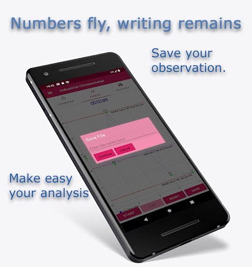
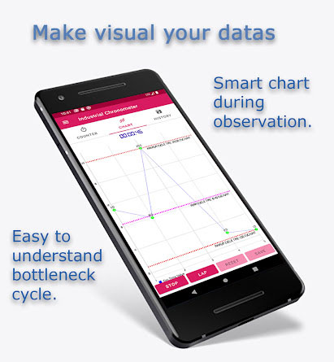
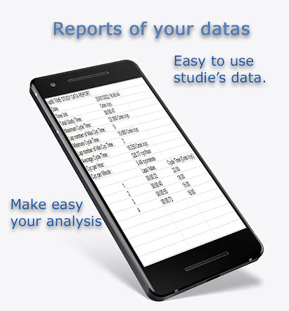

Industrial Chronometer
for Workshop Professionals
This app is designed for kaizen and lean activities to measure cycle time. You can use 2 type of time units for stopwatch such as second or hundredths of minute. HM unit is used as 'centième de minute - CMin ' for some industrial sector. Mathematically,1 minute is equal to 60 seconds and it's equivalent to 100 HM or 100 Cmin.
Dashboard shows all needed results of your study :
| CYCLE PER MINUTE | DURATION | CYCLE PER HOUR |
|---|---|---|
| Gives cycle value per minute ,is converted from selected time unit | Shows total observation time as hour,min and second. | Gives cycle value per hour, is converted from selected time unit. |
| MIN. CYCLE | MAX.CYCLE | MEAN CYCLE |
| Gives minimum cycle value as selected time unit. This is the fastest cycle value. | Gives maximum cycle value as selected time unit. This is the slowest cycle value. | Gives average of measures. This is the acceptable cycle for observed activity. |
User Guide :
- Select time unit for your study either second or hundredths of minute - cminute -
- Press Start button or Volume Up button of your device to run stopwatch,
- Press Lap button or Volume Down button to get top cycle
- Press Save to send your Download folder of your device's as an csv file for ios, an excel file for android.

- Press Reset button to run of new. Save button and Reset button are disabled during the measure.They become enable after stopwatch has been stopped. Lap button become disable while stopwatch doesn't work
- Storing Datas:

If you want to record your datas, you have to give the permission to write. Once you give a permission, you can click SAVE button after stopwatch is been stopped by user. They are stored in Download folder of your device under Industrial Chronometer folder in format csv.
